OpenNebula Keycloak SAML Integration Setup Guide
This guide covers setting up the OpenNebula site-agent plugin with Keycloak SAML integration for VDC user management. When enabled, the plugin automatically creates Keycloak groups and OpenNebula SAML-mapped groups for each VDC, allowing users to log in to Sunstone via SSO.
Architecture
1 2 3 4 5 6 7 8 9 10 11 12 13 14 15 16 17 18 19 20 21 22 23 24 25 26 27 28 29 30 31 32 | |
Prerequisites
- OpenNebula 6.8+ with FireEdge and SAML auth driver enabled
- Keycloak (any recent version) accessible from both the site-agent and the OpenNebula frontend
- waldur-site-agent with the
opennebulaandkeycloak-clientplugins installed
Step 1: Configure Keycloak
1.1 Create a Realm
Create a Keycloak realm for OpenNebula (e.g., opennebula). This realm will hold all users and VDC groups.
1.2 Create a SAML Client
In the realm, create a SAML client:
| Setting | Value |
|---|---|
| Client ID | opennebula-sp |
| Client Protocol | saml |
| Valid Redirect URIs | https://<sunstone-host>/fireedge/api/auth/acs |
| Name ID Format | username |
1.3 Configure Group Membership Mapper
Add a SAML protocol mapper to include group membership in the assertion:
| Setting | Value |
|---|---|
| Mapper Type | Group list |
| Name | member |
| SAML Attribute Name | member |
| Full group path | ON |
| Single Group Attribute | ON |
1.4 Create Test Users
Create users in the opennebula realm (e.g., testuser1, admin1). Set passwords for each.
1.5 Create an Admin Service Account
The site-agent needs admin access to the Keycloak API.
Use the built-in admin user in the master realm,
or create a dedicated service account with group management permissions.
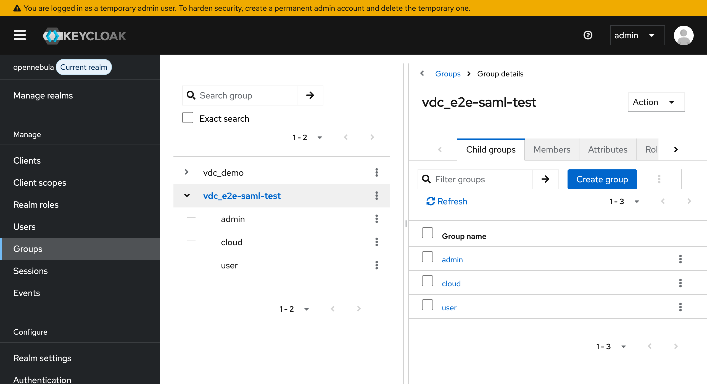
{kind=link}
Step 2: Configure OpenNebula SAML Auth Driver
2.1 Edit /etc/one/auth/saml_auth.conf
1 2 3 4 5 6 7 8 9 10 11 12 13 14 | |
Key settings:
- mapping_generate: false — the site-agent manages the mapping file, not OpenNebula
- mapping_key: 'SAML_GROUP' — matches the template attribute set on ONE groups
- mapping_mode: 'keycloak' — uses Keycloak group paths for matching
- mapping_filename — must match saml_mapping_file in the agent config
2.2 Get the IDP Certificate
Export the signing certificate from Keycloak: - Realm Settings > Keys > RS256 > Certificate
Or fetch from the SAML metadata endpoint:
1 | |
Step 3: Configure the Site Agent
3.1 Agent Configuration
1 2 3 4 5 6 7 8 9 10 11 12 13 14 15 16 17 18 19 20 21 22 23 24 25 26 27 28 29 30 31 32 33 34 35 36 37 38 39 40 41 42 43 44 45 46 47 48 | |
See examples/opennebula-config-saml.yaml for a complete example.
3.2 VDC Roles (Optional)
The default roles are admin, user, and cloud. Each role creates:
- A Keycloak child group under vdc_{slug}/{role_name}
- An OpenNebula group {slug}-{suffix} with SAML_GROUP and FIREEDGE template attributes
Override defaults in backend_settings.vdc_roles:
1 2 3 4 5 6 7 8 9 10 11 12 13 14 | |
Step 4: Create the OpenNebula VDC Offering in Waldur
4.1 Register the Organization as a Service Provider
Navigate to Organizations and select the organization that will provide the OpenNebula VDC service. Go to the Edit tab and click Service provider in the sidebar.
If the organization is not yet registered as a service provider, click Enable service provider profile.
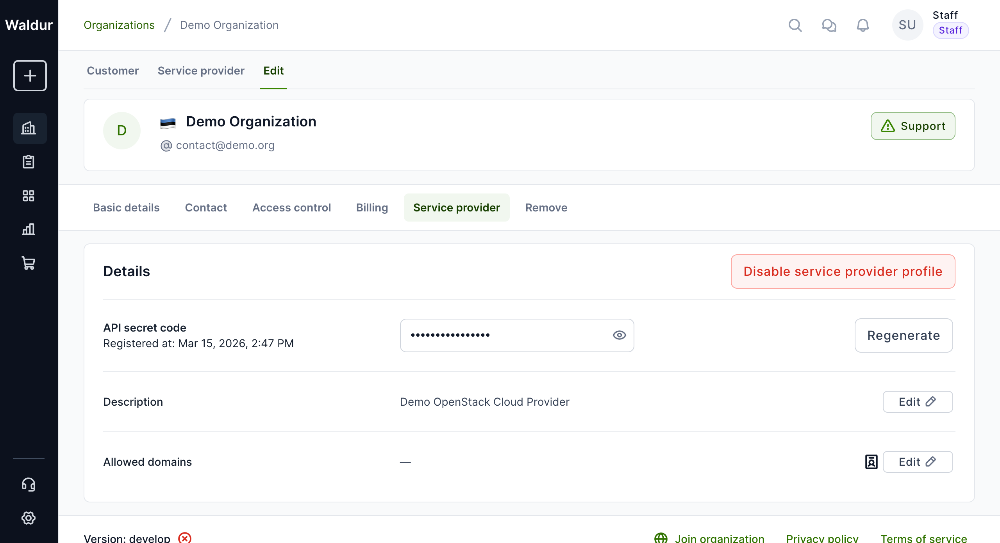
{kind=link}
4.2 Create the VDC Offering
Switch to the Service provider tab at the top, then navigate to Marketplace > Offerings. Click Add to create a new offering.
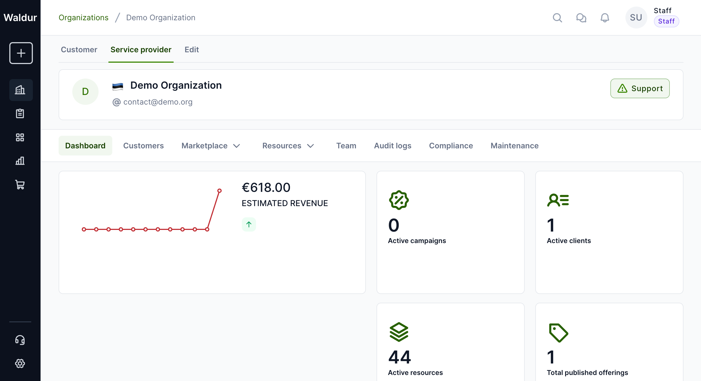
{kind=link}
In the creation dialog, fill in:
| Field | Value |
|---|---|
| Name | OpenNebula VDC |
| Category | Private Clouds (or create a new VDC-specific category) |
| Type | Waldur site agent |
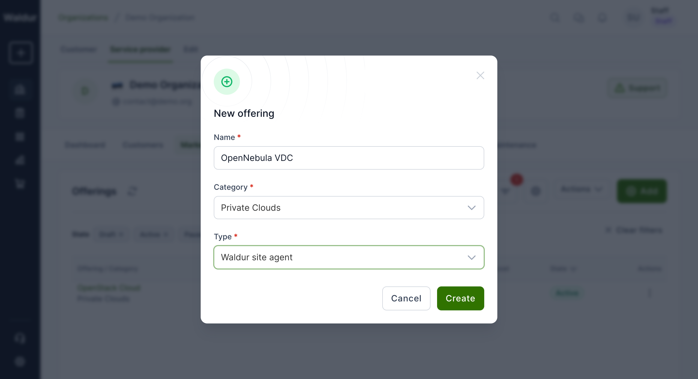
{kind=link}
4.3 Configure Offering Details
After creation, you'll be taken to the offering editor.
The offering UUID shown in the URL is what you'll use in the
site-agent config (waldur_offering_uuid).
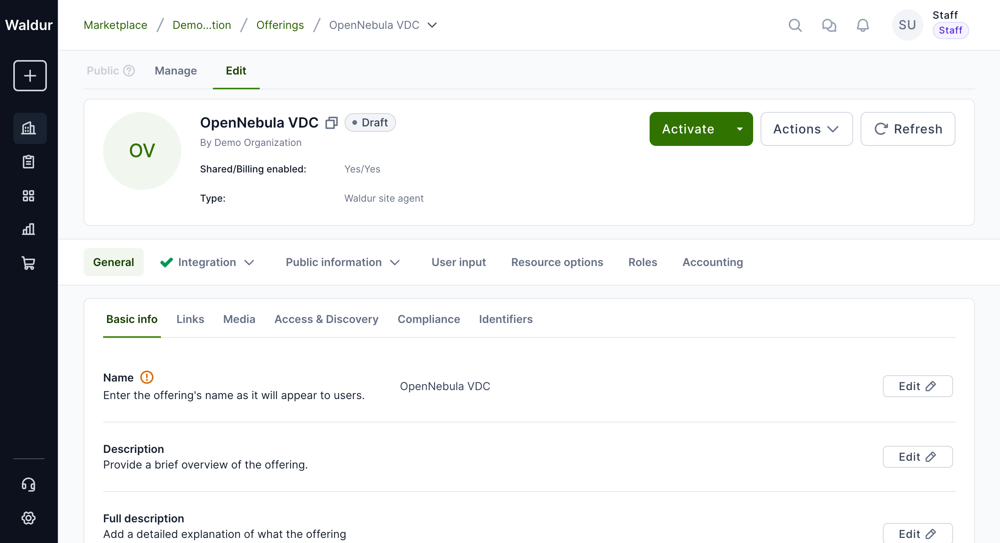
{kind=link}
4.4 Add the Sunstone Endpoint
Navigate to Public information > Endpoints and click Add endpoint. This endpoint will be displayed to users on the offering page, giving them a direct link to the OpenNebula Sunstone UI.
| Field | Value |
|---|---|
| Name | OpenNebula Sunstone |
| URL | https://lab-1910.opennebula.cloud (your Sunstone URL) |
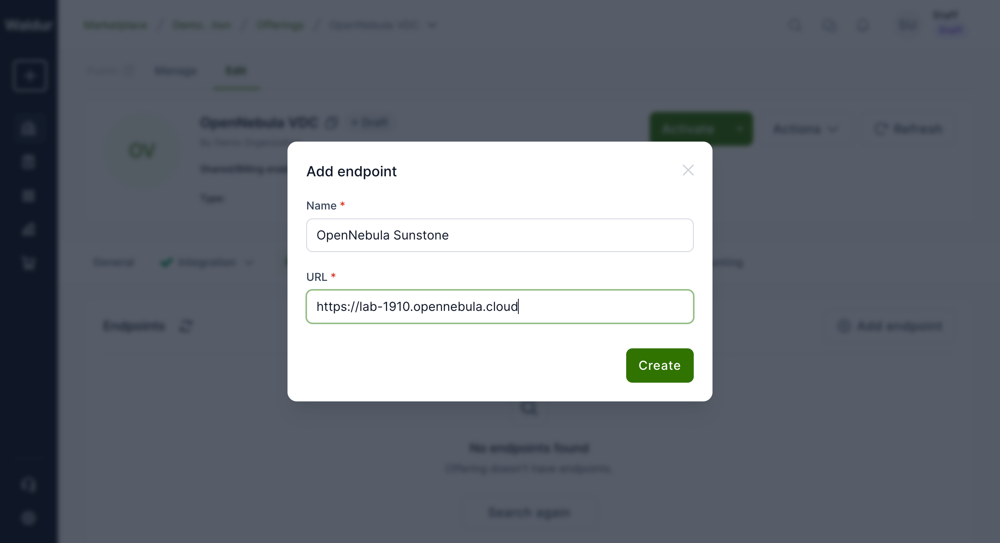
{kind=link}
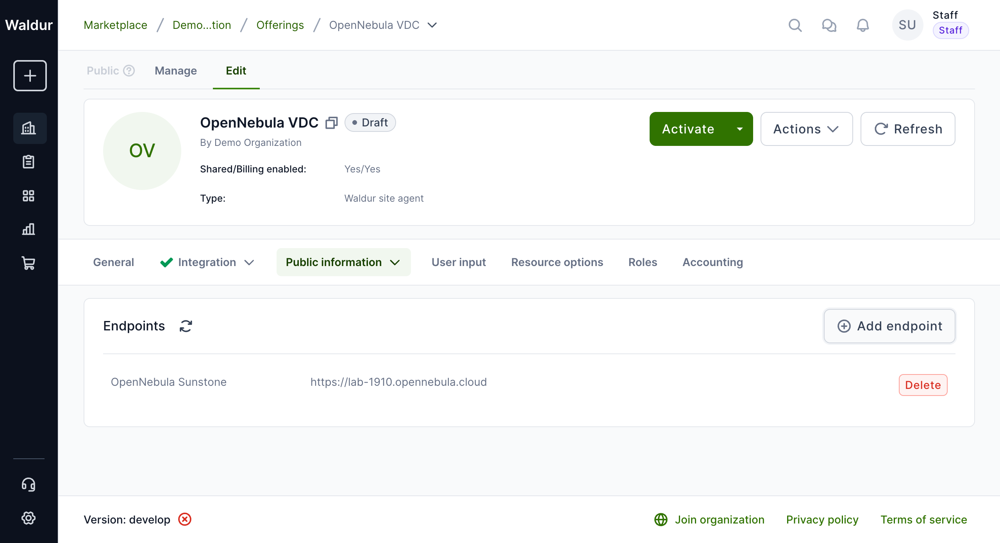
{kind=link}
4.5 Load Accounting Components from the Site Agent
Components (CPU, RAM, Storage) are defined in the site agent configuration
under backend_components. Use waldur_site_load_components to push them
into Waldur:
1 | |
This creates the offering components with the correct types, units, and limits. Then create plans (e.g., Small VDC, Medium VDC) via the Accounting tab in the offering editor.
4.6 Activate the Offering
Once the offering is configured, click Activate to publish it to the marketplace. Users will then be able to order VDCs through the Waldur self-service portal.
Step 5: End-to-End Walkthrough
This section demonstrates the complete flow from ordering a VDC in Waldur to logging in to Sunstone.
5.1 Site Agent Configuration
Create a configuration file for the site agent that matches the offering
created in Step 4. The key fields are waldur_offering_uuid
(from the offering URL) and the keycloak settings.
See opennebula-saml-agent-config.yaml for the full example.
5.2 Order a VDC in the Marketplace
Navigate to Marketplace in Waldur and find the "OpenNebula VDC" offering. Click Add resource.
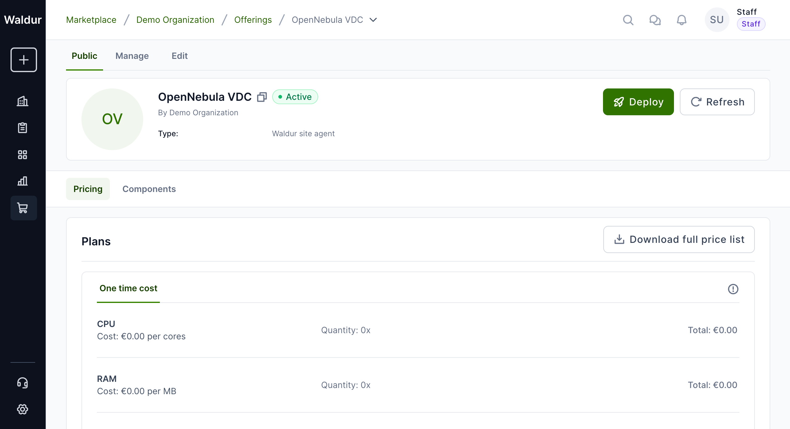
{kind=link}
Fill in the order form:
- Organization: Select your organization
- Project: Select or create a project (e.g., "OpenNebula SAML Demo")
- Plan: Select a plan (e.g., "Small VDC")
- Allocation name: Enter a name for the VDC (e.g., demo-saml-vdc)
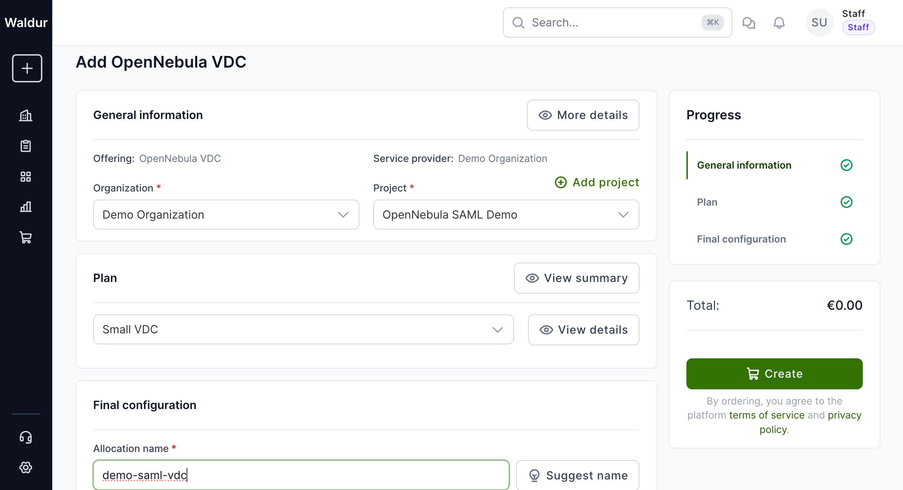
{kind=link}
Click Create and confirm. The order will be placed in pending-provider state.
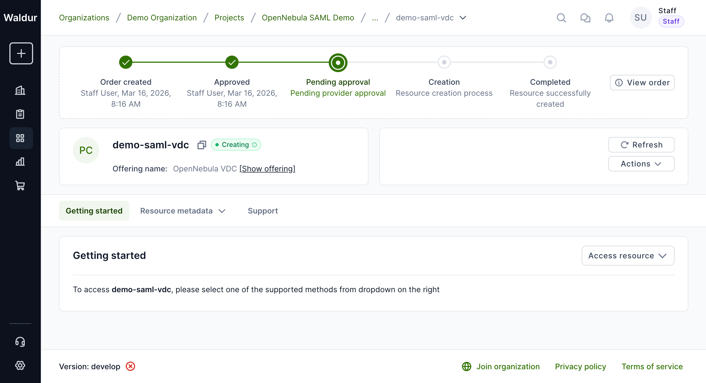
{kind=link}
5.3 Process the Order with the Site Agent
Start the site agent (or let the polling loop run). The agent will:
- Poll Waldur for pending orders
- Approve the order
- Create the VDC + group in OpenNebula
- Create Keycloak groups (
vdc_{name}/admin,vdc_{name}/user,vdc_{name}/cloud) - Create ONE groups with SAML templates
- Update the SAML mapping file
- Set the backend ID and mark the order as done
1 2 3 4 5 | |
Example output from a successful order processing run:
1 2 3 4 5 6 7 8 9 10 11 12 13 14 15 16 17 18 19 20 21 22 23 24 25 | |
The resource appears in the project:
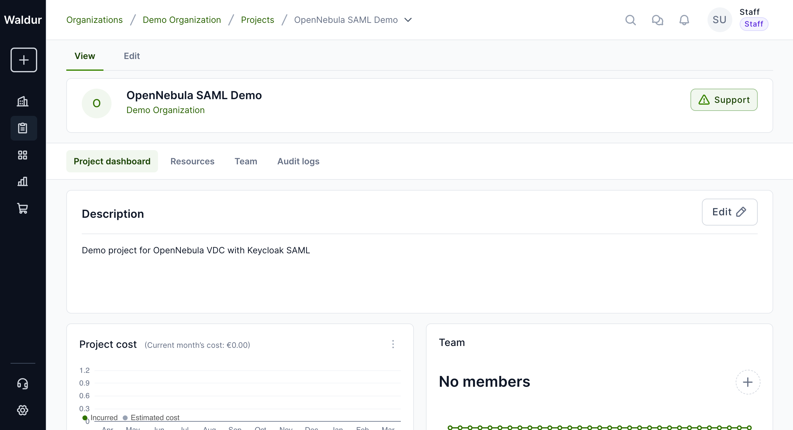
{kind=link}
5.4 Add a Keycloak User to the Project
Add a user (who exists in Keycloak) to the Waldur project as a member. This can be done via the project's Team tab or via the API.
On the next membership sync cycle, the site agent will call add_user()
which adds the user to the correct Keycloak group (vdc_{name}/user).
1 2 | |
Example output from membership sync:
1 2 3 4 5 | |
5.5 Verify Sunstone Access
After the site agent syncs the membership, the user can log in to Sunstone via SAML. The group switcher will now show the new VDC alongside any existing ones.
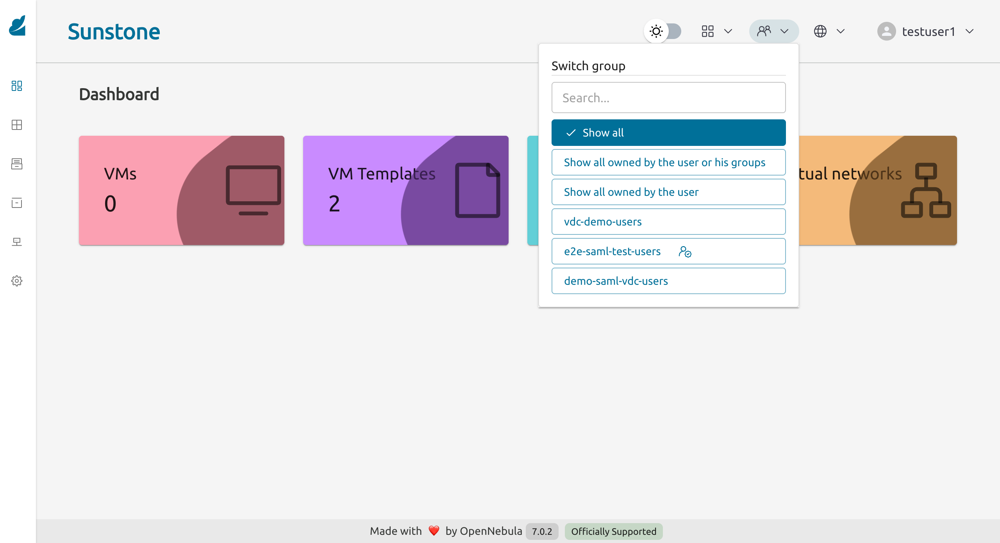
{kind=link}
Step 6: Verify the Integration
6.1 Sunstone Login Page
Navigate to Sunstone. The login page shows a "Sign In with SAML service" link at the bottom.
{kind=link}
6.2 Keycloak SAML Login
Clicking the SAML link redirects to the Keycloak login page for the opennebula realm.
{kind=link}
6.3 Sunstone Dashboard
After successful SAML login, the user lands on the Sunstone dashboard with the correct FireEdge view matching their role.
{kind=link}
6.4 Group Switcher
Users assigned to multiple VDCs can switch between them using the group switcher in the top bar.
testuser1 can see both vdc-demo-users and e2e-saml-test-users groups
{kind=link}
How It Works
VDC Creation
When the site-agent creates a VDC with keycloak_enabled: true:
- Creates the OpenNebula VDC, base group, and clusters (standard flow)
- Creates a Keycloak parent group
vdc_{slug} - Creates Keycloak child groups
admin,user,cloudunder the parent - Creates OpenNebula groups
{slug}-admins,{slug}-users,{slug}-cloud - Sets
SAML_GROUPandFIREEDGEtemplate attributes on each ONE group - Adds all ONE groups to the VDC
- Writes the mapping file (
keycloak_groups.yaml) with KC group path -> ONE group ID entries
User Management
When a user is added to a Waldur project that has a VDC:
- Site-agent calls
add_user(resource, username, role="user") - Finds the user in Keycloak by username
- Adds the user to the
vdc_{slug}/userKeycloak group - On next SAML login, OpenNebula reads the SAML assertion's
memberattribute - Matches the Keycloak group path against
keycloak_groups.yaml - Places the user in the corresponding ONE group with the correct FireEdge view
VDC Deletion
When a VDC is terminated:
- Deletes ONE SAML groups (
{slug}-admins,{slug}-users,{slug}-cloud) - Deletes Keycloak child groups, then parent group
- Removes entries from the mapping file
- Deletes the VDC and base group (standard flow)
SAML Mapping File Format
The mapping file is a YAML dictionary mapping Keycloak group paths to OpenNebula group IDs:
1 2 3 4 5 6 7 | |
The site-agent writes this file atomically (via temp file + rename) and merges new entries with existing ones.
Running Integration Tests
1 2 3 4 5 6 7 8 9 10 | |
The integration test suite (test_saml_integration_e2e.py) runs 21 ordered tests covering the full lifecycle:
| # | Test | Verifies |
|---|---|---|
| 01 | Connectivity | ONE + Keycloak reachable |
| 02 | Keycloak init | Client created successfully |
| 03 | Create VDC | VDC + KC groups + ONE groups created |
| 04-06 | KC groups | Parent + 3 children exist |
| 07-09 | ONE groups | SAML_GROUP template, FIREEDGE views, VDC membership |
| 10 | Mapping file | Contains correct entries |
| 11 | Quotas | VDC quotas set |
| 12-13 | Add user | User in correct KC group (user + admin roles) |
| 14 | Remove user | User removed from all role groups |
| 15 | User not found | BackendError raised |
| 16-20 | Delete VDC | Full cleanup (KC groups, ONE groups, mappings, VDC) |
| 21 | Idempotent | Second create reuses existing groups |
Troubleshooting
SAML login fails with "Invalid credentials"
- Verify the user exists in the Keycloak
opennebularealm (notmaster) - Check that the user has a password set
User doesn't see the correct VDC after login
- Check that the user is in the correct Keycloak group (
vdc_{slug}/{role}) - Verify the mapping file on the ONE server contains the correct entries
- Check that the ONE group has
SAML_GROUPset:onegroup show <id> - The
mapping_timeoutinsaml_auth.confcontrols how often the mapping file is re-read (default 300s)
Keycloak client init fails with 401
- The
keycloak_user_realmmust be set tomasterif the admin user is in the master realm - Verify admin credentials work:
curl -X POST .../realms/master/protocol/openid-connect/token
Groups created but user not mapped
- Ensure
mapping_generate: falseinsaml_auth.conf - Ensure
mapping_key: 'SAML_GROUP'matches the template attribute name - Ensure
mapping_mode: 'keycloak'is set - Check that the SAML client has a "Group list" protocol mapper with attribute name
member